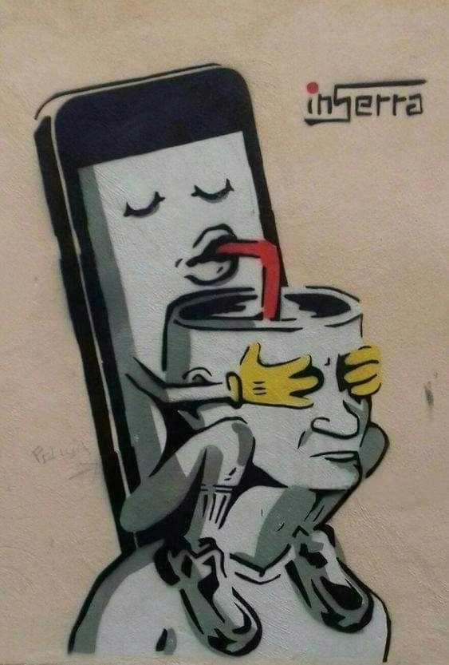
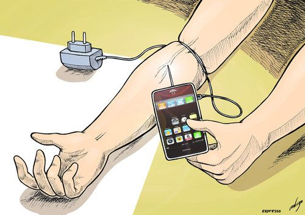

Is it an addiction if it's trending?
"If it's normal then, it can't be bad"
How many times have you told yourself 5 more minutes and I go do something? If you checked your phone to see how many hours you spend on it on average, would it surprise you? When thinking of addiction most may think of drug or substance use. However, an addiction can be anything, a phone addiction is a newer one. The change had happened so fast that it doesn't even have a proper diagnoses. People have become so addicted to their phones that it's now normal. How many trends have happened in the last year? Or Month? How many young people are on social media right now? In the last month there was a main trend that now is considered old.
symptoms of phone addiction:
"It's not that bad, how bad can it be?"
The list above is only a few of the symptoms of phone addiction. Many children had phones or tablets before even entering kindergarten. How many children have unsupervised access to the internet? Would people even notice if their kids were being exposed to horrible content? And teenagers, most also have unsupervised access, they are at a vulnerable state. Many teenagers don't even realize that they are in that state at times, and with the rise in use of social media in their age group; they all ready falling for social media as a whole. Apps like Instagram, Tik Tok, and YouTube, are the most used in most people's phones.


IT's Time to Confront Our Global Addiction_TED Talk The Impact of Social Media on Mental Health